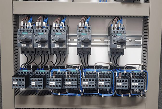
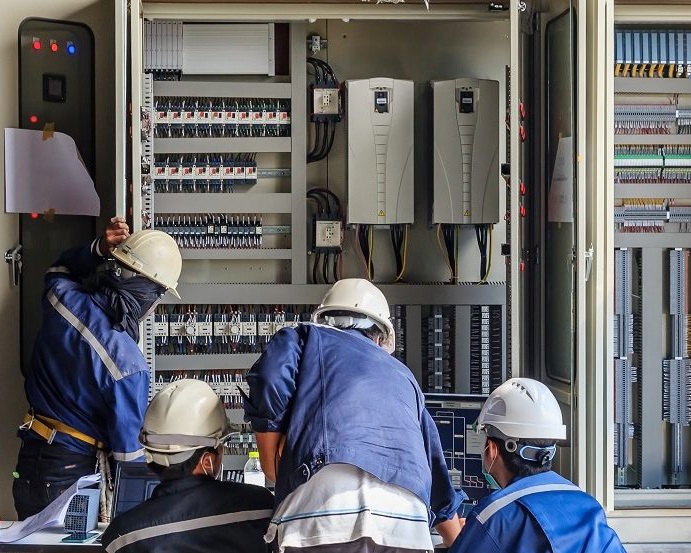
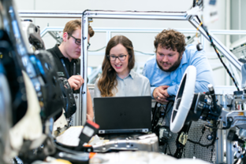
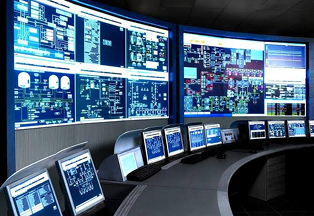
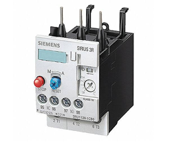
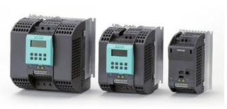
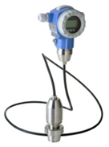
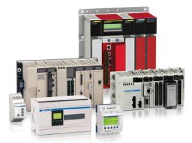
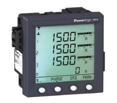

SERVICIOS
- • Capacitación y entrenamiento técnico
- • Proyectos de ingeniería
- • Modernización de controles automáticos
- • Monitoreo de procesos
- • Proyectos llave en mano
- • Contratos de mantenimiento y servicio
- • Suministro de equipo de control / eléctrico
- • Armado de tableros
- • Instalaciones mecánicas eléctricas

Capacitación
En nuestro depertamento de capacitación, tenemos la misión de transmitir los conocimientos que se requieren para dominar lenguajes de programación de PLC SIEMENS. También nos enfocamos en entrenar al personal de mantenimiento para lograr las habilidades que le permiten dar servicio a nuestros equipos.

Ingeniería
Contamos con equipos en varias disciplinas:
- • Obra electromecánica
- • Ingeniería eléctrica
- • Instrumentación
- • Programación de PLC
- • Interfaces HMI
- • Sistemas de control distribuido
- • Dibujantes
- • Eléctricos y tableristas
... Entre otros, y con toda esta capacidad, podemos completar proyectos de sistemas de fábrica o procesos, como son: Puesta en marcha de líneas, Modernización de maquinaria, Modificación de máquinas, Diseño de soluciones y Desarrollos llave en mano.

Monitoreo
La industria moderna requiere contar con información correcta y oportuna. Las interfaces humano-máquina y los sistemas SCADA cubren necesidades como:
• Registro de volúmenes de producción
• Gráficas de producción
• Registro de alarmas
• Registros históricos
• Pronósticos de producción
• Rasteo de productos
• Estadísticos y tiempos muertos

PRODUCTOS
Productos de control, protección y potencia
- Botonería
- Contactadores
- Guardamotores
- Arrancadores a tensión plena
- Arrancadores suaves
- Relevadores de sobrecarga
- Electrónicos

- Relevadores
- Encapsulados
- Protecciones para Monitores
- Variadores de frecuencia
- Motores trifásicos (uso general,
severo y a prueba de explosión,
verticales, flecha hueca y especiales)

Productos de automatización industrial
|
|
|
|
 |
 |
 |
| Cotiza ahora | ||
Algunas de nuestras marcas

CONTÁCTENOS

Matriz en Monterrey:Jalisco No. 2714 Pte.Col. Vivienda Popular, C.P.67116 Guadalupe, Nuevo León. |
Sucursal en VeracruzChihuahua #403Col. Petrolera, C.P. 96500 Coatzacoalcos Veracruz, entre calles Tamaulipas y Zacatecas. |
☎ 81 2711-6068
☎ 81 2711-6791
Email's:
✉ contacto@simcmexico.com
✉ administracion@simcmexico.com
✉ alejandro.rangel@simcmexico.com